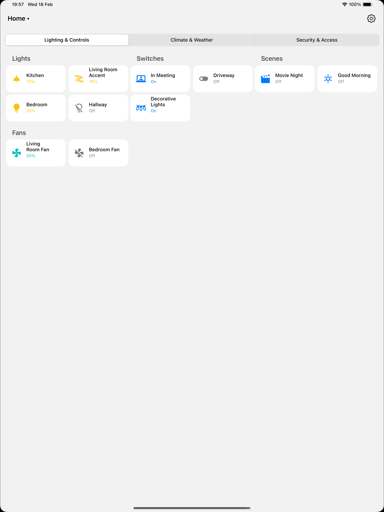
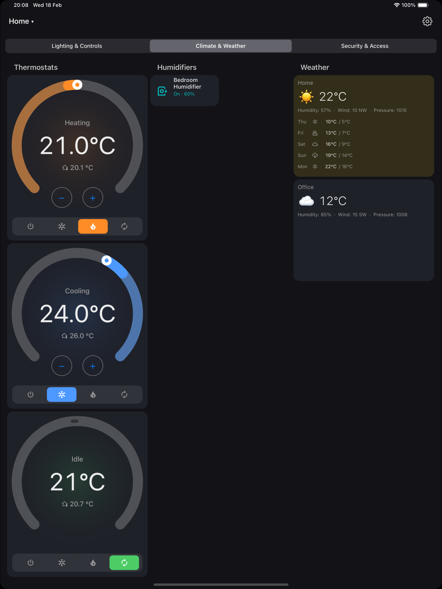
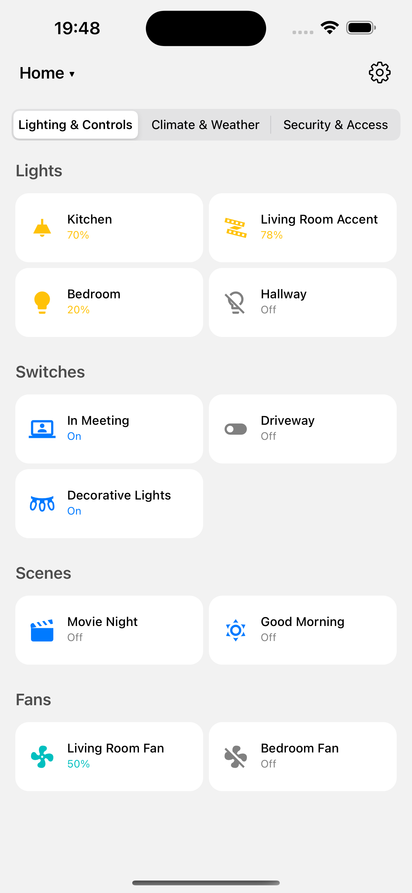
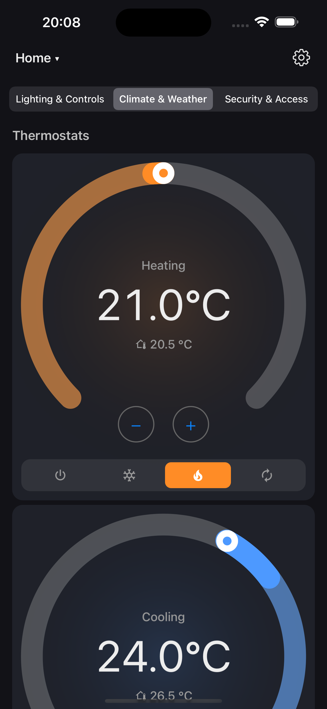

Features
- Native rendering of HA Lovelace sections-layout dashboards
- Real-time updates via WebSocket — entity states update live
- 33 cell types — controls, inputs, composite cards, entity detail views
- Themes — Auto, Dark, Light, and Gradient modes
- Kiosk mode — hides navigation, prevents sleep, ideal for wall-mounted tablets
- Demo mode — 3 built-in dashboards with simulated entities, no server needed
- Dashboard switcher — switch between multiple HA dashboards
- mDNS discovery — finds Home Assistant servers on your local network
- Dual auth — long-lived access token or full OAuth login flow




Requirements
HA Dashboard connects directly to your Home Assistant server. You need:
- A running Home Assistant instance (local network or remote via HTTPS)
- At least one Lovelace dashboard configured
- An iPad or iPhone running iOS 12 or later
No Home Assistant server? Use Demo Mode to explore the app with built-in sample dashboards.
Support
Need help or found a bug? Here's how to get support:
Privacy
HA Dashboard does not collect, store, or transmit any personal data. The app contains no analytics, tracking, advertising, or telemetry. All communication is directly between your device and your Home Assistant server.